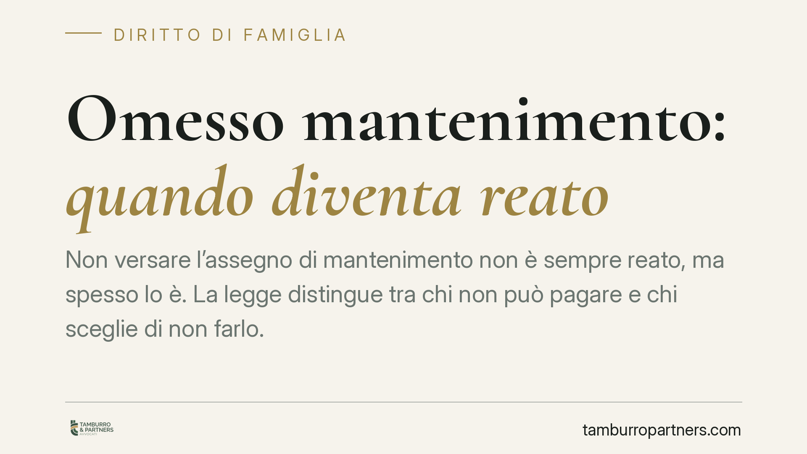

Omesso mantenimento: quando diventa reato
Non versare l'assegno di mantenimento non è sempre reato, ma spesso lo è. La legge distingue tra chi non può pagare e chi sceglie di non farlo. Capire quando l'omesso mantenimento integra un illecito penale, quali norme si applicano dopo una separazione e come si prova l'impossibilità economica è decisivo per chi versa e per chi attende l'assegno.

# Omesso mantenimento: quando diventa reato
L'omesso mantenimento è uno dei temi che più frequentemente porta il conflitto familiare davanti al giudice penale. Ma non ogni mancato pagamento costituisce reato. La differenza sta in un dato preciso: se il debitore non ha oggettivamente i mezzi per adempiere, oppure se ha scelto di sottrarsi all'obbligo pur potendo farvi fronte.
Art. 570 e 570-bis c.p.: due norme distinte
Occorre tenere separate due disposizioni, spesso confuse.
L'art. 570 del codice penale (violazione degli obblighi di assistenza familiare) punisce, al primo comma, chi si sottrae agli obblighi di assistenza inerenti alla responsabilità genitoriale o alla qualità di coniuge. Al secondo comma, punisce con maggiore severità chi fa mancare i mezzi di sussistenza ai figli minori, agli ascendenti o al coniuge.
Da notare: il legislatore parla oggi di responsabilità genitoriale, non più di "potestà genitoriale", categoria abrogata dal D.Lgs. 154/2013.
Quando invece l'assegno di mantenimento nasce da una separazione o dallo scioglimento del matrimonio, la norma centrale è l'art. 570-bis c.p., introdotto dal D.Lgs. 21/2018. Questa fattispecie punisce specificamente il coniuge che si sottrae all'obbligo di corresponsione di ogni tipologia di assegno dovuto in caso di separazione, divorzio o affidamento dei figli. È, in materia di assegno post-separazione, la norma da cui partire.
"Mezzi di sussistenza": non è il tenore di vita
Un chiarimento tecnico che orienta molte decisioni. I "mezzi di sussistenza" richiamati dall'art. 570, comma 2, c.p. non coincidono con l'assegno civilistico né con il tenore di vita goduto durante il matrimonio.
Si tratta del minimo vitale: ciò che serve a garantire vitto, alloggio, cure mediche essenziali, abbigliamento. Un concetto più ristretto rispetto all'importo fissato in sede civile. Ne consegue che il pagamento parziale o irregolare può non integrare l'ipotesi penale più grave, pur restando inadempimento sul piano civile.
Impossibilità incolpevole o scelta di sottrarsi
È il punto decisivo. La giurisprudenza penale distingue con nettezza tra:
- impossibilità oggettiva e incolpevole di adempiere (ad esempio perdita involontaria del lavoro, malattia invalidante), che esclude la responsabilità penale;
- scelta consapevole di non pagare, che integra il reato anche in presenza di difficoltà economiche non totali.
La condizione di indigenza, per operare come scriminante, deve essere reale, persistente e non dipendente dalla volontà del debitore. Chi riduce artificiosamente i propri redditi, rifiuta occasioni di lavoro o dissimula disponibilità patrimoniali non può invocarla.
Sul punto la Corte di cassazione ha elaborato criteri rigorosi in materia di impossibilità incolpevole e di riparto dell'onere della prova. *(Le pronunce di riferimento sono da verificare puntualmente prima della citazione: su un tema con giurisprudenza consolidata e in evoluzione, riportiamo il principio senza vincolarci a estremi non confermati.)*
Implicazioni pratiche
Per chi versa l'assegno: la mera difficoltà economica non basta a mettersi al riparo. Occorre poter dimostrare, con documenti, che l'impossibilità è effettiva e non ricercata. Il silenzio o la sparizione aggravano la posizione.
Per chi attende l'assegno: la denuncia penale e il recupero civile del credito sono binari distinti e paralleli. Il processo penale mira a sanzionare la condotta; il recupero del dovuto passa per gli strumenti esecutivi civili (pignoramento, ordine di pagamento diretto al datore di lavoro). L'uno non sostituisce l'altro.
Cosa fare in concreto
- Documenta la tua situazione reddituale. Chi non può pagare conservi buste paga, comunicazioni di licenziamento, certificazioni mediche: la prova dell'impossibilità incolpevole spetta a chi la invoca.
- Non interrompere ogni versamento. Anche un pagamento parziale, se corrisponde al massimo delle possibilità, incide sulla valutazione del giudice penale.
- Chiedi la revisione dell'assegno in sede civile se le condizioni economiche sono mutate in modo stabile. Non spetta al debitore ridurre unilateralmente l'importo.
- Attiva subito il recupero civile se sei il beneficiario: gli strumenti esecutivi agiscono a prescindere dall'esito penale.
- Verifica quale norma si applica al tuo caso (art. 570, 570-bis c.p.) prima di ogni iniziativa: l'inquadramento cambia procedura e conseguenze.
---
*Contributo informativo a cura di Tamburro & Partners - Avv. Giuseppe Tamburro. Non costituisce parere legale.*
Ogni famiglia ha il suo equilibrio.
Separazione, divorzio, affidamento, assegno: se vuoi un confronto riservato su una specifica situazione, scrivi allo studio. Ti rispondiamo entro un giorno lavorativo.